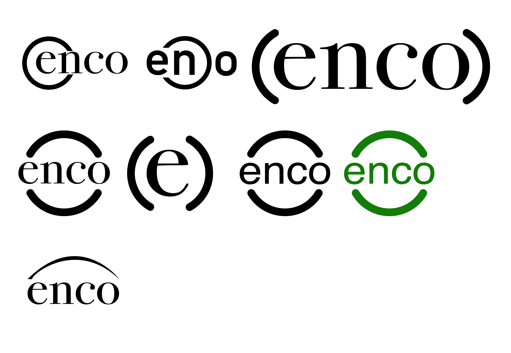
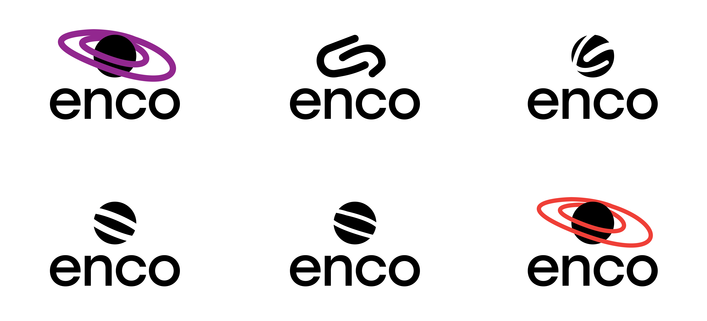
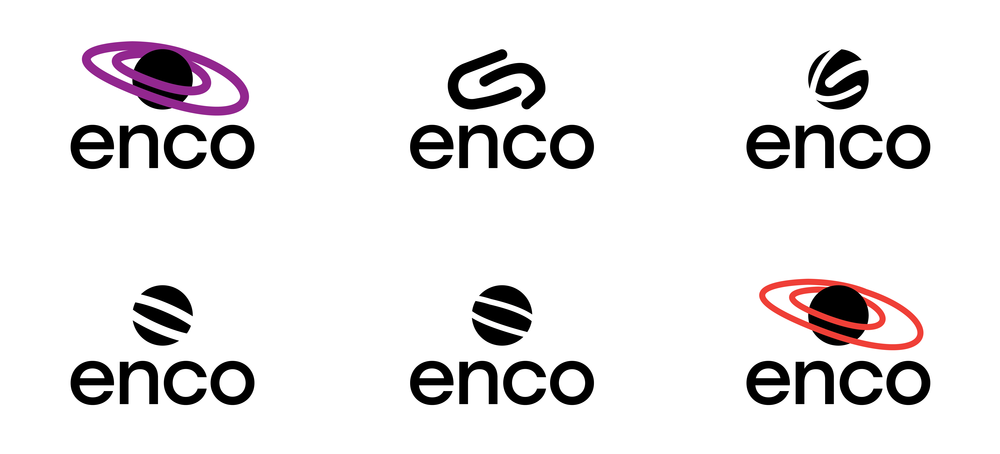

Overview
For this project I worked as a designer to collaboratively develop the creative direction and publication layout for the university publication UNSWeetened. I worked as the primary designer for the publication in collaboration with 4 illustrators, the head editor and the promotional material designer.

Research

For a University Project, I was tasked with designing a brand strategy and concept for a hypothetical studio collective which valued sustainability. Over the course of this project I used Adobe Illustrator to create a logo, colour scheme, typography system, and visual language. Part of the deliverables included a pitch deck in which my team were required to pitch 3 high-level concepts to address waste management in Australia. Consequentially, I created a presentation which utilised the aforementioned brand guidelines to generate infographics to assist in communicating these solutions.

Development
I created a high degree of logo iterations to reach the final logo.
 



From this logo I developed a series of visual assets with the colours I developed.


Outcome


For a University Project, I was tasked with designing a brand strategy and concept for a hypothetical studio collective which valued sustainability. Over the course of this project I used Adobe Illustrator to create a logo, colour scheme, typography system, and visual language. Part of the deliverables included a pitch deck in which my team were required to pitch 3 high-level concepts to address waste management in Australia. Consequentially, I created a presentation which utilised the aforementioned brand guidelines to generate infographics to assist in communicating these solutions.